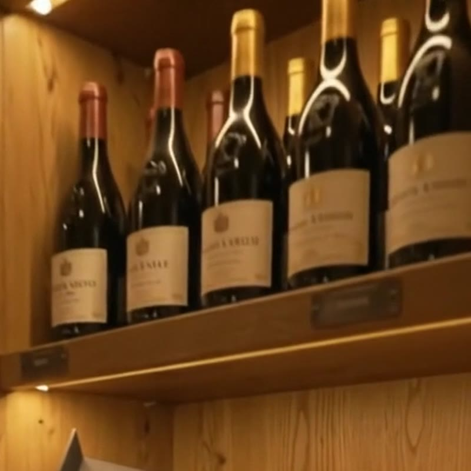
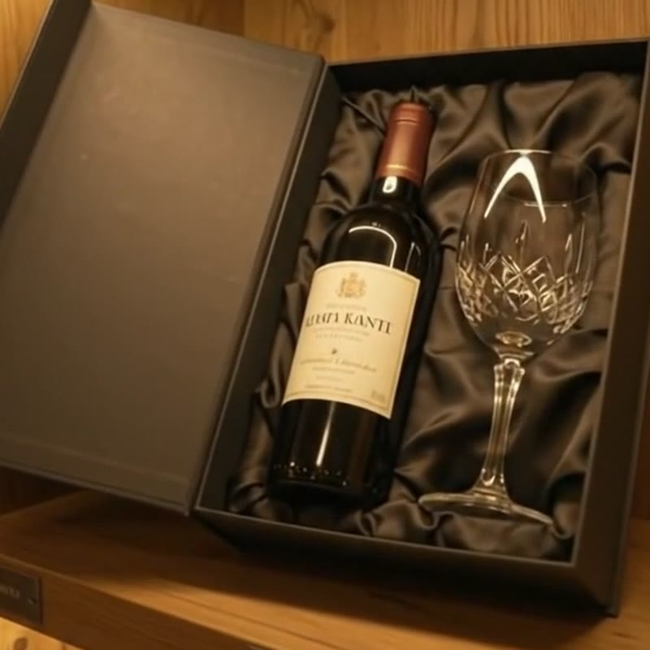
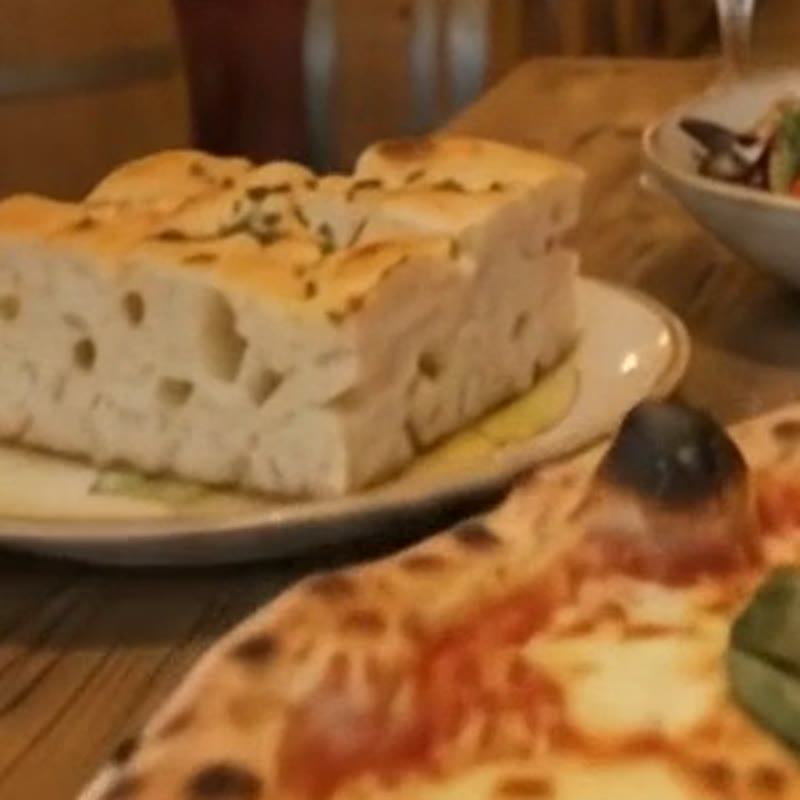
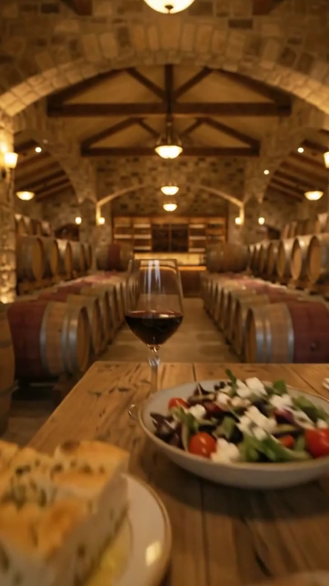

היינות שלנו

אדום יבש · בציר 2023120 ₪

מארז מתנה לחג260 ₪

ארוחת טעימות במרכז המבקרים95 ₪
ביקור ביקב

בואו לטעום אצלנו: סיור באולם החביות, טעימות בבר היין, וארוחה קלה מול הנוף. פתוח בימים א' עד ה', ובשישי עד הצהריים. מומלץ לתאם מראש.
איך זה עובד?
כשנכנסתם לאתר הזה, נפתח קודם סיור ביקב. זה מסך הפתיחה. האתר עצמו לא השתנה בכלל: מוסיפים רק שורת קוד אחת בהגדרות האתר.
<script src="https://me8499973-art.github.io/meital/petach/tour.js" data-tour="כתובת הסיור" data-name="שם העסק"></script>
עובד בוויקס, בשופיפיי, בוורדפרס ובכל אתר אחר. מי שכבר ראה את הסיור לא יראה אותו שוב בכל כניסה.